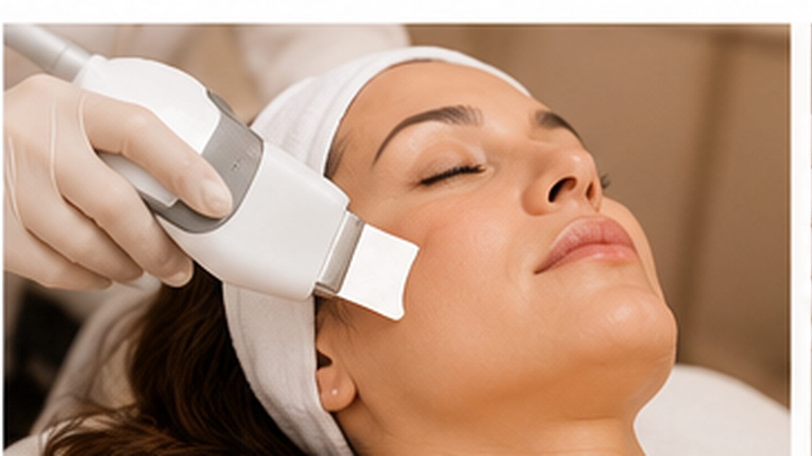

JOURNAL / Skin renewal
Can ultrasonic peeling treat acne, dark spots, or scars? Know the limits
The ultrasonic spatula described on the service page is a surface-care technology. Its name alone does not show that it treats acne, hyperpigmentation, or scars; the concern and evidence need separate assessment.

What the procedure name actually tells you
The service page describes an ultrasonic vibrating spatula used to support cleansing and surface exfoliation. That describes a tool and a general purpose; it does not prove effectiveness for a specific disease or condition. The device model, manual, mode of use, and studied outcome matter — and should not be inferred from a trade name.
It is also unsafe to transfer findings from sonic brushes, other types of ultrasound, or different procedures to this technique. Evidence for one device does not automatically validate another.
Active acne is a different question from cleansing
Acne can include blackheads, papules, pustules, and deeper lesions. Surface cleansing does not replace assessment and treatment of acne, especially when lesions are painful, persistent, or leave marks. Manipulating inflamed lesions can worsen irritation and increase the chance of dark spots or scars.
If you have active acne, ask whether cleansing should be postponed or adapted, and seek dermatology care when acne is persistent, deep, or causing scars. Do not use an aesthetic session as a substitute for acne care.
A flat dark spot and a scar are not the same
A flat mark after a breakout may be post-inflammatory hyperpigmentation; a depressed or raised scar involves a structural change. These concerns are not interchangeable and need their own assessment. The American Academy of Dermatology describes different acne-scar types and says a plan should consider the mark, skin tone, and whether acne is still active.
For that reason, do not assume ultrasonic exfoliation will fade a dark spot or remodel a scar. Evidence for treating these conditions does not prove an effect from an ultrasonic spatula whose exact model and protocol have not been identified.
Useful questions before deciding
- Which specific concern is this procedure intended to address?
- Exactly which device and handpiece will be used, and what purpose does its manual describe?
- Is there clinical evidence for this device and my particular concern?
- If I have inflamed acne, recent marks, scars, or irritation, should those be assessed or addressed first?
- What alternative is available if this technique does not match my goal?
References and limits
The references help distinguish acne, hyperpigmentation, and scars and explain why each needs its own assessment. They do not study or prove results from the locally offered ultrasonic device.
Educational content; it does not replace diagnosis or individual advice. Learn about ultrasonic peeling and discuss your concern during an assessment.